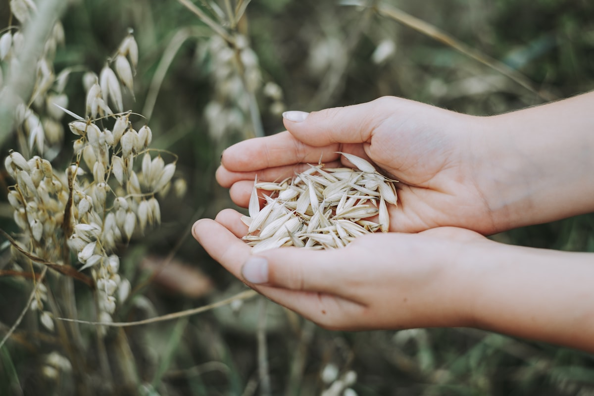

농산물 원자재와 식품 원부자재.
곡물, 유지작물, 사료원료, 식품 원부자재를 국제적으로 통용되는 품질 기준으로 산지에서 계약하고, 수요처인 제분소·사료공장·식품공장이 실제로 받을 수 있는 형태로 운송합니다.
취급하는 원자재와 원료.
산지는 요구사항에 맞춰 매칭합니다. 단백질 단가를 최적화하는 사료공장과 원료를 인증받아야 하는 식품 제조사는, 품목명이 같아도 같은 물건을 사는 것이 아닙니다.
곡물 · 시리얼
제분용 · 사료용- 제분용 소맥
- 사료용 소맥
- 옥수수
- 대맥(보리)
- 수수
- 쌀
- 귀리
유지작물 · 식용유지
조유 · 정제유- 대두
- 유채(카놀라)
- 해바라기씨
- 팜유 (CPO / RBD)
- 대두유
- 해바라기유
사료 원료
단백질 · 에너지원- 대두박
- 채종박
- DDGS
- 옥수수 글루텐밀
- 밀기울
- 어분
- 당밀
사료 첨가제
영양성- L-라이신 HCl
- DL-메치오닌
- L-트레오닌
- 비타민 프리믹스
- 미네랄 프리믹스
- 효소제
감미료 · 전분
식품 등급- 정제당 (ICUMSA 45)
- 옥수수 전분
- 물엿(글루코스 시럽)
- 과당
- 말토덱스트린
- 변성전분
식품첨가물
식품 원료 등급- 구연산
- 구연산나트륨
- 잔탄검
- 아스코르빈산
- 인산염
- 보존료
두류 · 특용작물
식용- 병아리콩
- 렌틸
- 건조두류
- 황완두
- 참깨
- 땅콩
비료 · 농자재
벌크 농업 투입재- 요소
- DAP / MAP
- 염화칼륨(MOP)
- NPK 복합비료
- 황산암모늄
- 미량요소
함께 일하는 수요처.
제분 · 곡물 가공
단순 물량이 아니라 단백질, 수분, falling number 기준으로 계약하는 제분용 소맥과 곡물.
사료 제조사
표면 시세가 아니라 배합 기준으로 가격을 판단하는 단백질박, 에너지 사료, 아미노산.
식품 제조사
완제품이 요구하는 인증과 추적성을 갖춘 원료 등급 원부자재.
착유 · 정제업
착유 및 정제 설비에 장기 또는 스팟 기준으로 공급하는 유지작물과 조유.
음료 · 제과
식품 등급 포장과 서류를 갖춘 감미료, 전분, 기능성 첨가물.
유통사 · 무역사
자체 물량을 구축하는 지역 유통사를 위한 백투백 및 재수출 구조.
축산 계열화 기업
생산 사이클에 맞춘 분할 인도 스케줄 기반의 장기 공급 계약.
농업 협동조합
조합원 물량을 통합한 비료 및 농자재 공동 구매.
식품 공급망 화물에는 그만큼의 의무가 따릅니다.
농산물 화물은 화학 화물에는 없는 이유로 문제가 생깁니다. 병해충 검출, 곰팡이독소 수치, 형식이 맞지 않는 식물검역증. 저희는 선적 전에 이 변수들을 미리 관리합니다.
식물검역 · 위생 증명
도착국 검역 당국이 인정하는 형식으로 산지 관할 기관이 발급한 증명서를 확보합니다.
독립 품질 분석
수분, 단백질, 이물, 아플라톡신, 잔류농약을 선적항에서 공인 시험기관을 통해 검사합니다.
산지 추적성
작황연도, 산지 지역, 가공 시설을 기록하여 클레임 발생 시 해당 로트를 역추적할 수 있게 합니다.
인증 스킴 대응
할랄, 코셔, Non-GMO, 유기농, 지속가능성 인증을 수요처 시장이 요구하는 경우 수배합니다.

벌크, 컨테이너, 또는 포대.
핸디사이즈~파나막스
벌크 터미널에서 하역하는 곡물·유지작물·비료 물량의 전용 및 분할 선적.
라이너백
벌크 하역 설비가 없는 수요처 또는 소량 물량을 위한 20피트 라이너백 컨테이너.
25~50kg · 톤백
팔레트 적재 포대와 1,000kg 톤백. 인쇄 포장 또는 중립 포장으로 사양 지정 가능.
플렉시탱크 · ISO 탱크
식용유지, 당밀, 액상 원료를 위한 식품용 플렉시탱크 또는 전용 ISO 탱크.